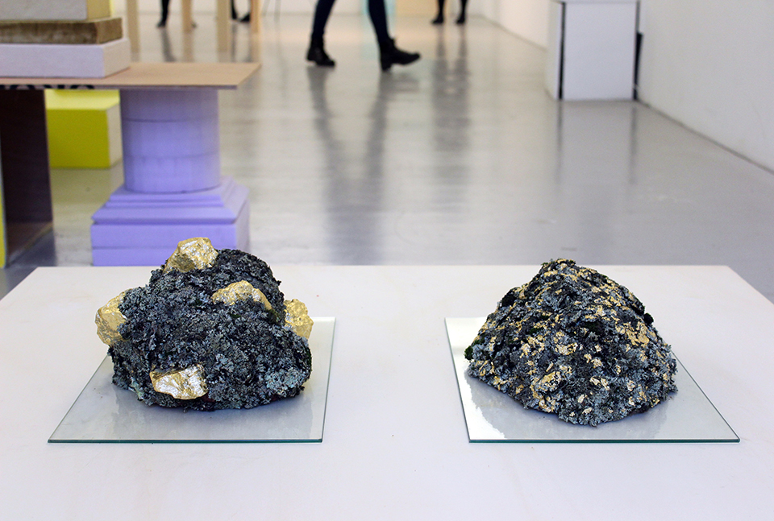

DELPHINE BERTRAND
Visual artist based in Rennes,
indoor landscape gardener
ABOUT
CV

Dancing walruss
Textiles, semolina, cotton, polyurethane foam


Tempête
Crushed colored plaster, powder plaster, shaped plaster

Forme ramollie par Guillaume
Textiles and polystyrene balls

Le temple sikh
Cultivated lichen, gold foil and expansive foam


Bâton de sculpteur sur son linceul
Wood, gold foil, plasters, colored salts

Essai
Wood and stapled foam
DNSEP exhibition views, ÉESAB Quimper
École Européenne Supérieure d'Art de Bretagne, Quimper
June 2018
Coordination : Virginie Barré
Photographs : Clara Joly


Bâton de sculpteur à Kastel Koz
Wood, gold foil, plaster / HD color photographs

Symbiose
Wild lichen, gold foil, stones, soil, extruded polystyrene
ÉESAB Quimper
December 2015